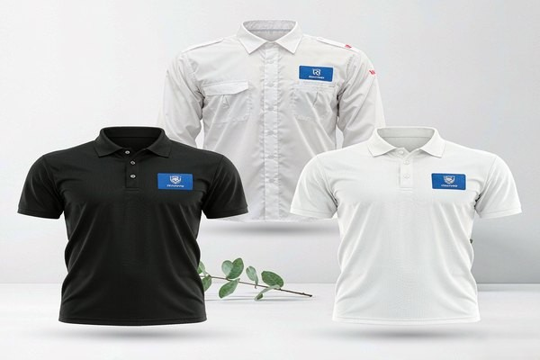
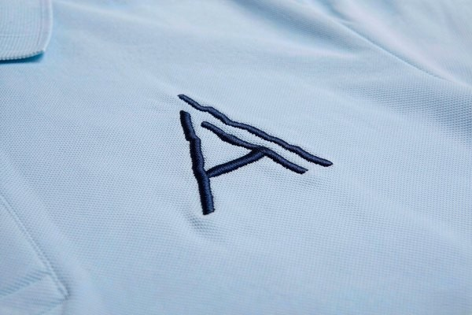
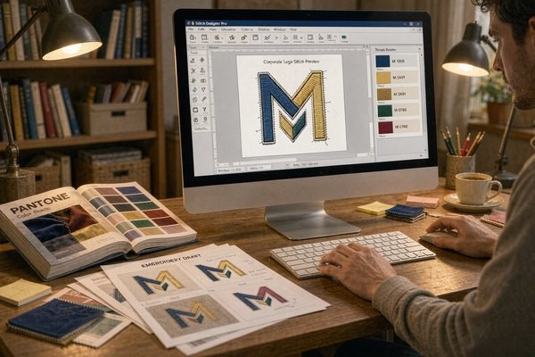

Corporate Logo Patches: Professional Branding
A uniform is a walking billboard, and the logo on the chest is its headline. Companies reach for corporate logo patches when they need that headline to survive hundreds of laundry cycles, look identical across every branch and shift, and outlast the garment itself. But corporate branding runs on rules that consumer patches ignore: exact brand colors, consistent placement, approval workflows, and reorders a year later that must match the first batch. This guide walks through the full decision chain — construction choice, color matching, sizing, placement, attachment — so your uniform program ships right the first time and stays right through every reorder.

Why Companies Choose Patches Over Direct Embroidery
The default alternative to a patch is embroidering the logo straight onto each garment. Direct embroidery looks tidy on a sample — then reality arrives. Uniforms wear out and get replaced at different times, so every replacement shirt needs a fresh embroidery run; garment colors vary across the range, so the digitized file needs variants; and a supplier change or rebrand means throwing away the setup entirely. A patch decouples all of that: one production run produces a stock of identical logos that apply to any garment, old or new, from any vendor.
Patches also carry the brand better on hard-working clothing. A chest logo embroidered directly on a 300-gram work jacket stitches through every layer and can pucker heavy twill; a finished patch sits on top with its own structure. And when the branding changes — merger, refresh, new wordmark — the old patches come off and the garments live on. For fleet operators, hotel groups, and franchise chains, that difference alone pays for the patch program within a couple of uniform cycles.
Choosing the Construction: Embroidered, Woven, PVC or Leather
The logo itself decides the construction more than any catalog does. Run your brand mark through this filter:
| Construction | Best Brand Fit | Fine Detail Limit | Brand Feel |
|---|---|---|---|
| Embroidered | Bold marks, 3–5 colors, classic badges | ~4 mm text height | Traditional, tactile, premium-uniform |
| Woven | Fine wordmarks, small text, gradients | ~2 mm text height | Crisp, flat, tech and hospitality |
| Printed | Full-color logos, photographic marks | ~1.5 mm, unlimited color | Exact reproduction, modern |
| PVC / silicone | Outdoor brands, technical workwear | Bold shapes, 3D relief | Rugged, contemporary |
| Leather (debossed) | Luxury, F&B, heritage brands | Simple marks, monograms | Understated, upscale |
The thread-based limits come straight from physics — the reasoning behind them is in our thread types guide and the text legibility guide. The short version: a logo whose smallest element sits below 4 mm fights embroidered construction and usually lands better as woven or printed. Many corporate programs end up with a hybrid: a woven or printed patch for the fine wordmark, and an embroidered patch for the bold icon used on outerwear.

Matching Brand Colors Without Arguments
Brand guidelines live and die on color, and here corporate patch programs meet their classic trap: a logo that is perfect Pantone 286 C on paper drifts to a tired royal blue in thread. Embroidery thread does not come in every Pantone shade — reputable manufacturers map Pantone references to the nearest of several hundred available thread colors and send a physical or photographed sample for approval before production. Approve that mapping once, in writing, and every future reorder inherits it.
Three practical rules keep color fights short:
Approve physical samples, not screen renders. Screens backlight dyes; fabric absorbs light. A Pantone-to-thread chart shown on a monitor is a suggestion; a sewn sample is a decision.
Specify the garment, not just the patch. The same blue patch reads different on navy twill and gray piqué. Approve colors on the actual garment fabric your staff will wear, or at least on an identical swatch.
Watch the edge treatment. A dark merrowed border visually thickens a light logo; a laser-cut edge keeps the silhouette exact. If brand guidelines obsess over clear space around the logo, carry that clear space into the patch design — patches with borders shrink the visible mark, which is why many corporate marks ship borderless. The trade-offs are laid out in our border options guide.
Size and Placement Standards That Scale
Consumer patches can go anywhere; corporate logo patches need a rulebook, because forty employees will not eyeball the same position. The standard corporate placements have converged across industries:
| Placement | Typical Logo Size | Position Rule |
|---|---|---|
| Left chest (polo, shirt, jacket) | 2.5–3.5" wide | Centered on the chest pocket or 7–9" down from the shoulder seam |
| Right chest | 2.5–3.5" | Mirrors left; often reserved for name or role |
| Sleeve / upper arm | 2–3" wide | Centered on the bicep line, ~1" below the shoulder seam |
| Back yoke or full back | 5–12" | Yoke: centered below collar; full back: 3–4" below collar |
| Cap front | 2–2.5" wide | Above the brim seam, per our hat patch guide |
Write the chosen rule into the uniform spec sheet with a photo — "left chest, 3 inches wide, top edge aligned with pocket seam" beats "on the chest" every time. Our patch placement guide covers the measuring technique staff or alterations shops can follow, and the full measurement logic lives in the size guide.
Attachment Strategy for Uniform Programs
Attachment is a logistics decision disguised as a technical one. For most corporate uniforms, the answer is straightforward:
Iron-on plus a locking stitch for permanent programs. Heat-applied backing bonds the patch for laundering, and one stitch line around the border makes it effectively permanent. This is the workhorse for hotel, airline, and restaurant uniforms where the logo never moves. The method detail is in our sew-on guide.
Magnetic or pin systems where identity changes. Security, events, and multi-role staff rotate badges faster than uniforms get washed; a magnetic patch program lets one shirt serve three identities without a needle ever touching it — with the pacemaker caveat that guide covers.
Velcro panels for tactical and technical work. Where gear carries hook-and-loop fields already, logo patches on loop backing slot straight in.
Whatever the method, decide it before the patch order, because backing type changes unit cost and the reorder workflow. The full comparison matrix is in the backing types guide.
The Reorder Problem: Consistency a Year Later
The first order is easy. The test of a corporate logo patch program arrives twelve months later, when headcount grew, two branches reordered separately, and the new batch of chest logos sits noticeably yellower beside the old ones. Thread dye lots, changed suppliers, and unrecorded color mappings are the usual culprits. Prevent it with three habits:
Keep one approved reference. Store the approved sewn sample and its Pantone-to-thread mapping with the original supplier invoice. Any reorder — from us or anyone else — starts from that physical reference, not from a file.
Consolidate reorders. Branch-by-branch ordering maximizes dye-lot drift. Rolling reorders through one channel keep every patch in circulation cut from adjacent production runs.
Order for the uniform lifecycle, not the month. Patches store well flat and dark; a modest overage on the first order is cheaper than a rushed top-up run that misses the color spec. Our no-minimum policy makes the overage decision painless either way.

Artwork Prep: What We Need From Your Brand Team
The fastest proofs come from the cleanest inputs. Send vector artwork (AI, EPS, SVG or print-quality PDF) rather than a screenshot of the website header — digitizers redraw raster files by eye, and every redraw is a chance for drift. Include the Pantone references for each color, the minimum size the logo must work at, and the garment color it will sit on. If the logo contains gradients or photographic elements, say so up front; they steer the construction choice toward printed patches, and our logo conversion guide explains that translation step in detail.
One more upstream decision worth making early: text. Taglines under the wordmark look natural on a 4-inch patch and illegible at 2.5 inches. If the chest patch size cannot support the full lockup, split the program — icon patch on the chest, wordmark on the sleeve or back — instead of shrinking everything until nothing reads.
Frequently Asked Questions (FAQ)
Q1: How much do corporate logo patches cost?
Small runs typically land between $0.80 and $4 per patch depending on size, construction, and thread count — a 3-inch two-color embroidered chest patch sits near the low middle of that range. Unit price drops sharply at 100+ pieces, but with no minimum order you can start with exactly the quantity the current headcount needs and reorder as you grow.
Q2: Can you match our exact Pantone brand colors?
Thread comes in a fixed palette, so manufacturers map each Pantone reference to the closest available thread and confirm with a sewn sample before production. For brand-critical shades, approve that physical mapping once and keep it as the reorder reference — screens render color differently and should never be the approval surface for a uniform program.
Q3: What size should a corporate logo patch be?
Left-chest logos work best at 2.5–3.5 inches wide, sleeve logos at 2–3 inches, and full-back branding at 10–12 inches. The ceiling is set by readability, the floor by detail: if your logo's smallest text needs more than 4 mm of height, either enlarge the patch or move the fine elements to a woven or printed construction.
Q4: Will the logo patches survive industrial laundry?
Yes, when attached for it. A heat-applied patch with a locking border stitch endures commercial laundering schedules that destroy direct adhesive or loose iron-on applications. Choose polyester thread over rayon for bleach-exposed environments like food service and healthcare — the durability comparison is in our thread guide.
Q5: Can one order cover multiple uniform styles and colors?
That is exactly where patches beat direct embroidery. One patch design applies to polos, jackets, caps and knitwear across the whole range; only the attachment method changes per garment. If the brand has light and dark garment variants, check the logo's edge contrast on both — a single border color that works on navy twill and white piqué is usually a mid-tone from the brand palette.
Conclusion: One Patch, Every Uniform, Every Year
Corporate logo branding succeeds when it treats the patch as infrastructure: construction chosen for the logo's actual detail level, colors locked through a physical sample, placement written into a spec sheet, attachment picked for the uniform's laundry life, and reorders anchored to one approved reference. Do those five things and the two-hundredth employee's uniform looks identical to the first one — which is the entire point of a brand.
Send us your brand guidelines and vector logo, and we will return construction options, thread color mappings, and size recommendations with a free digital proof in 12 hours and no minimum order. Request a free quote and put your brand on every chest, consistently.